High in the Greek mountains, half hidden in the clouds, are the remains of an old troposcatter communication base. Surrounded by four large communication dishes, the abandoned buildings contain the best-preserved remains of NATO's Cold War preparations.
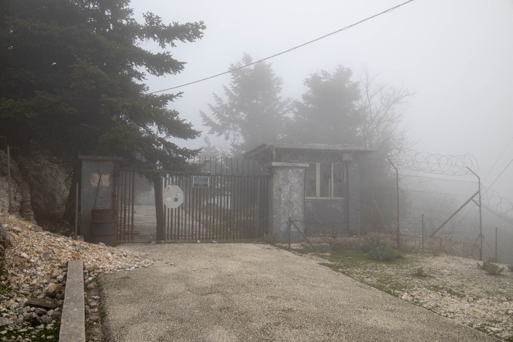
Surrounded by high fences with multiple coils of razor wire and hidden half in the clouds, it would be easy to assume this troposcatter base was still active if it weren't for the open gate. Nearly 30 years have passed since SHAPE (Supreme Headquarters Allied Powers Europe) authorised the closure of this site, along with many others across Italy, Greece, and western Turkey, on 31 December 1995.
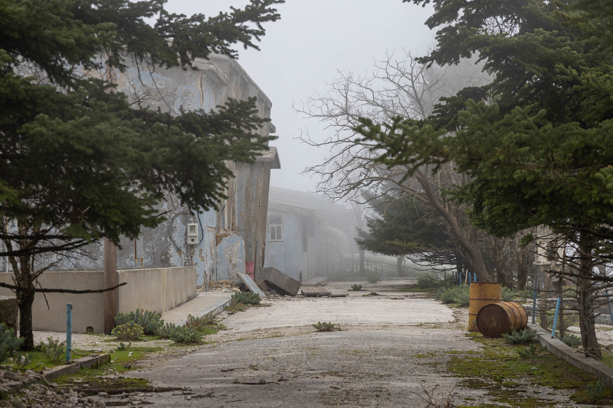
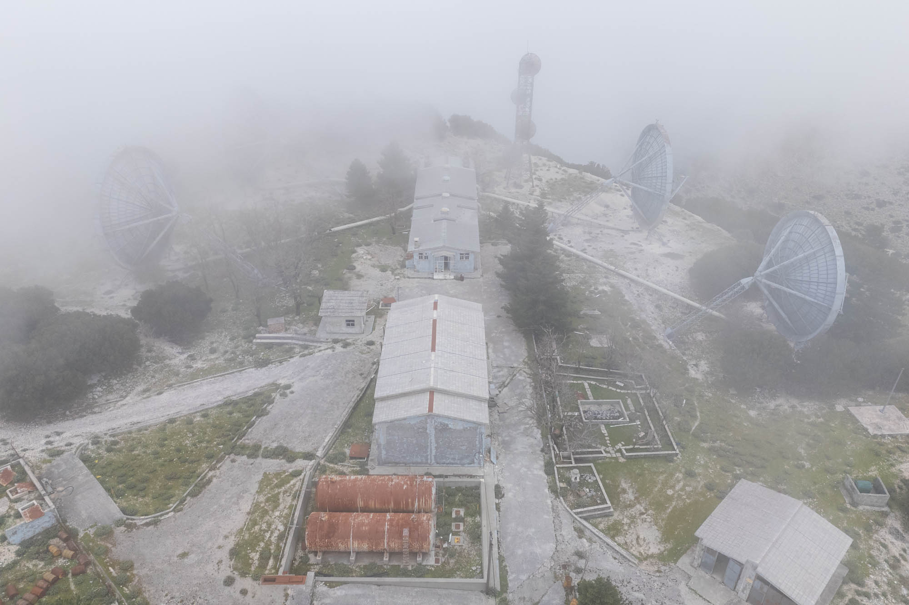
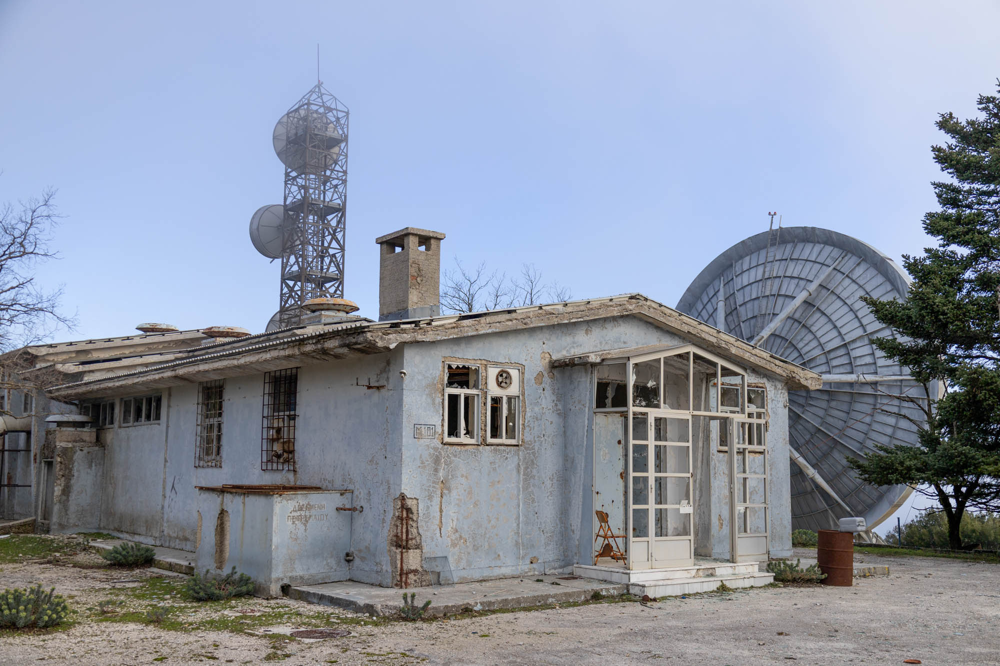
While many other former ACE-High troposcatter bases have been vandalised or stripped of valuable components, this site's remote location has largely protected it from human-based decay. Inside the buildings, you’ll still find large generators, numerous spare parts, telescopes, and extensive racks of decades-old transmission and computing equipment.
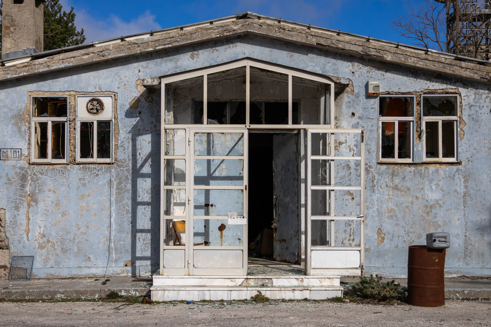
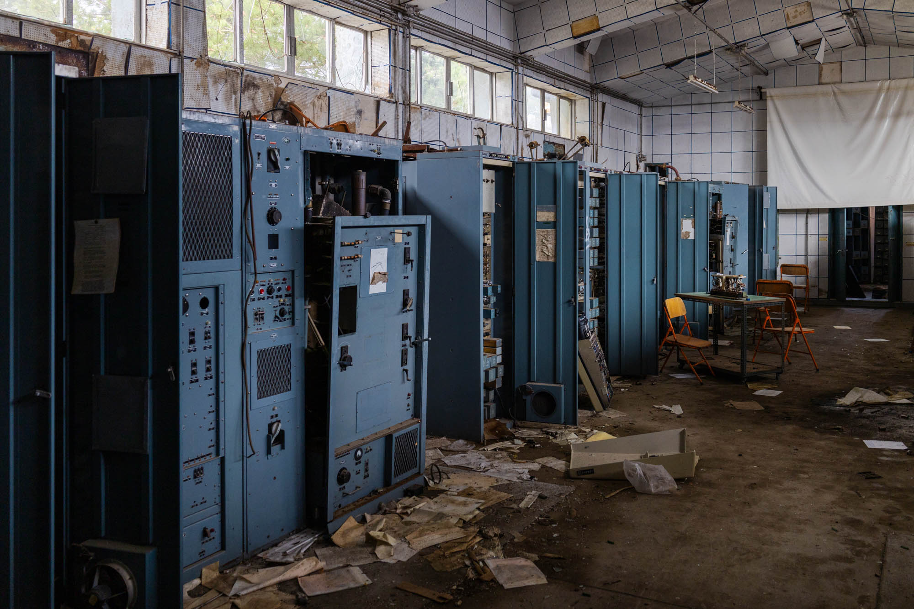
Each rack of 1950s–1970s-era equipment helped one of four large parabolic dish antennas, often up to 30 metres wide, transmit microwave signals toward the horizon and received extremely weak, scattered return signals from the other stations.
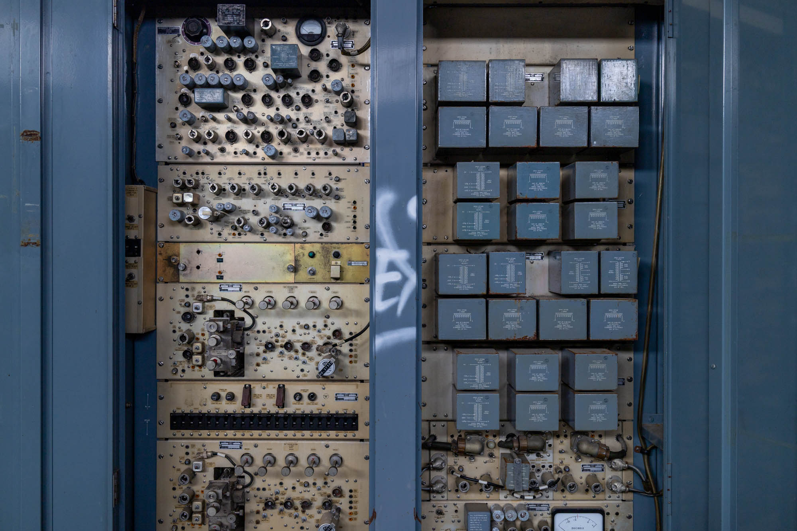
The densely arranged tubes, knobs, meters, and patch points on the left side of the photo enabled technicians to balance channels, fine-tune gain, and adjust for atmospheric conditions—ensuring the reliable transmission of secure military communications.
The uniform grey metal boxes on the right primarily contain high-voltage power supply modules, transformers, capacitors, and rectifiers, which would have fed the electronics on the left with the power needed.
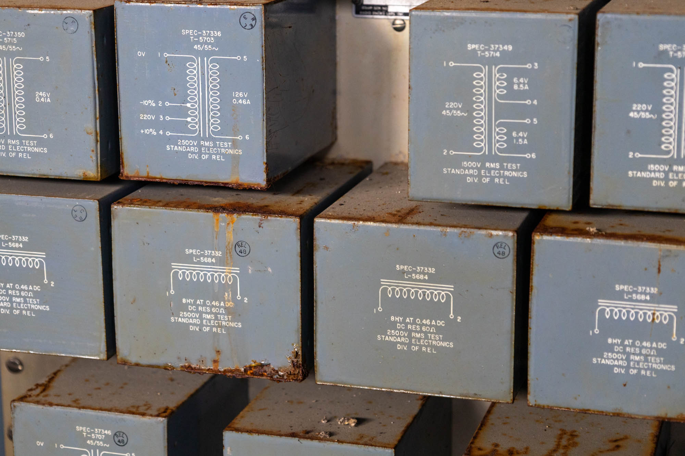
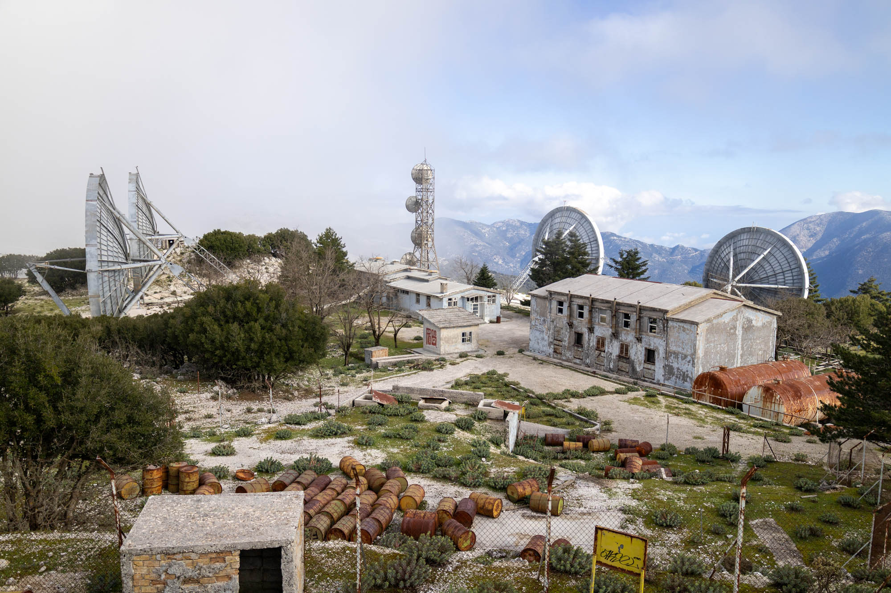
The two dishes on the left side of the above photo are pointed west toward southern Italy, while the two on the right face east towards Athens.
With only a little rust and some missing cables, this base, among the 47 other ACE-High bases, offers the most complete glimpse into the past.
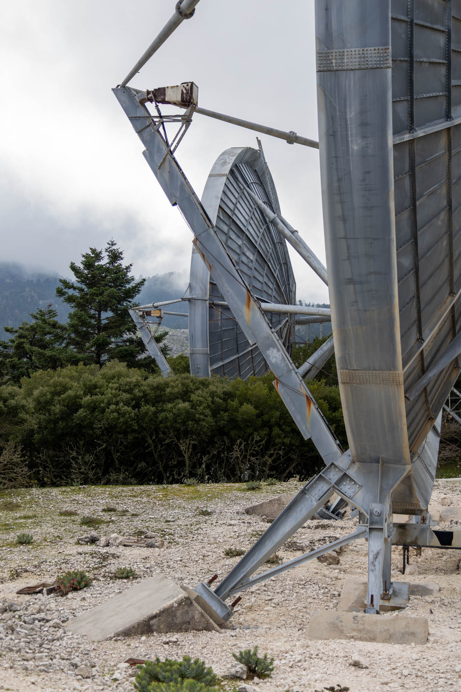
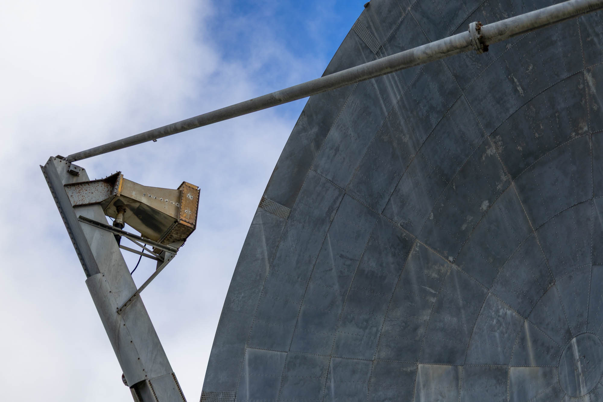
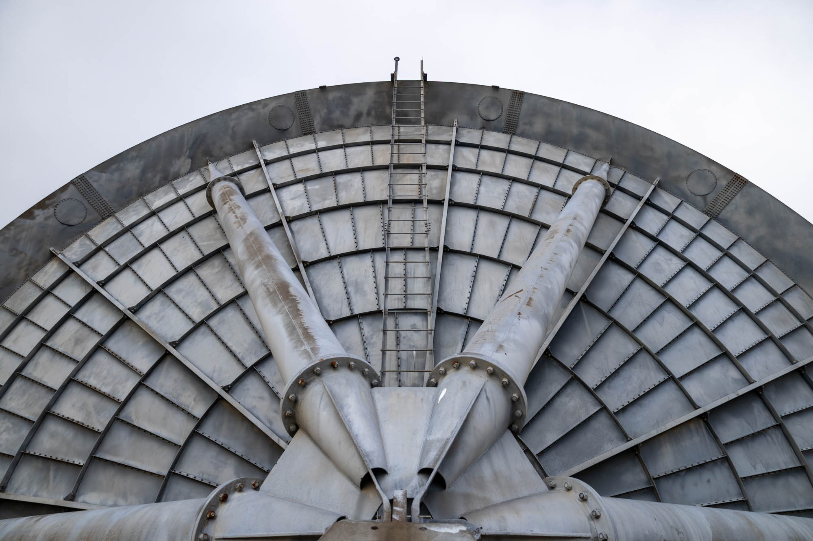
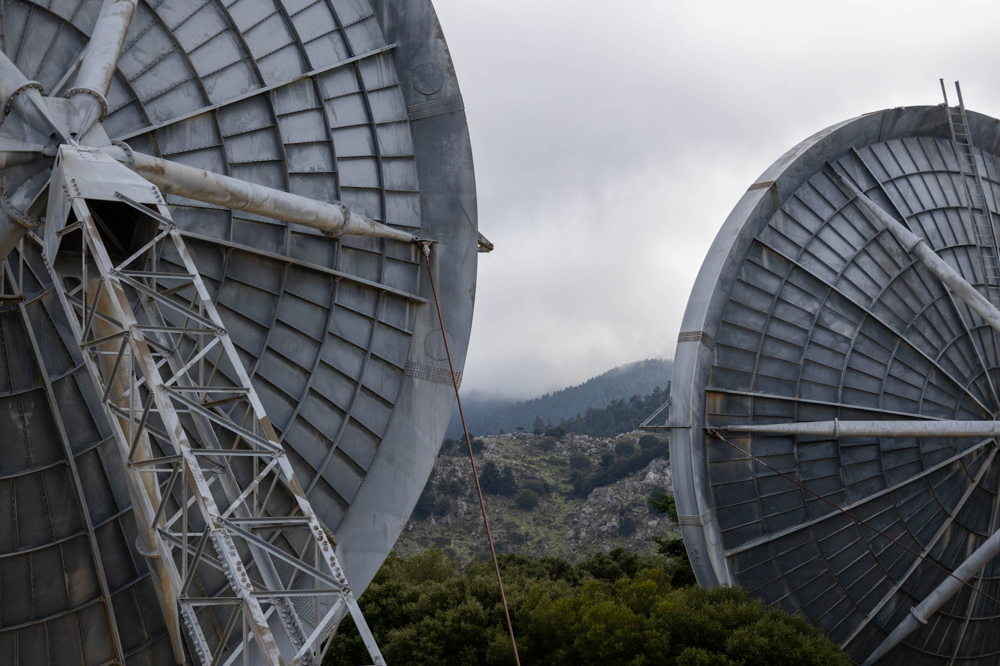
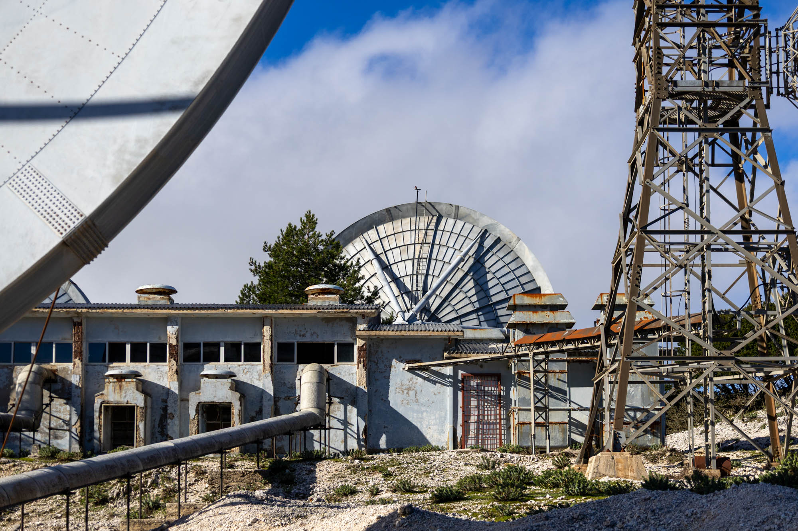
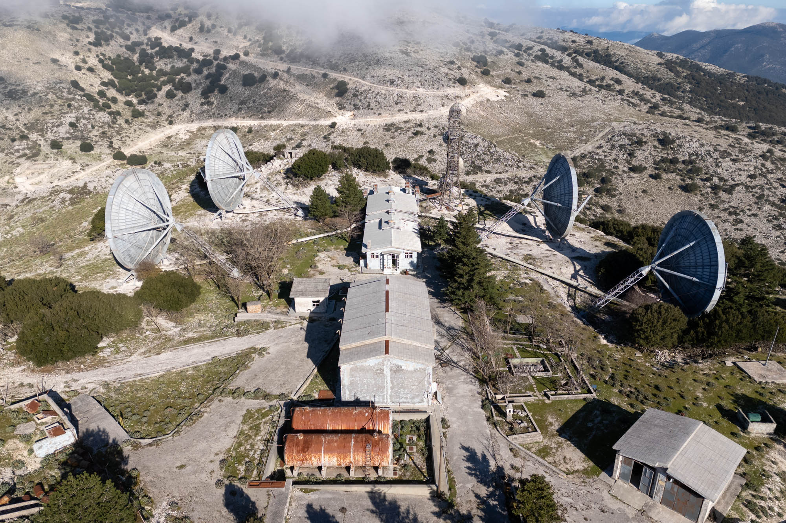